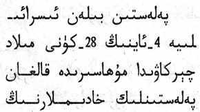
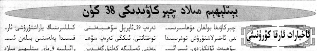

This page gathers together basic information about the Arabic script and its use for the Uighur language. It aims (generally) to provide an overview of the orthography and typographic features, and (specifically) to advise how to write Uighur using Unicode.
See the Arabic page for most of the information about how the Arabic script works, and the orthography used for the Arabic language. This page aims to provide Uighur-specific information.
See also the companion document, Arabic character notes, for detailed information about specific Unicode characters.
Phonetic transcriptions on this page should be treated as an approximate guide, only. Many are more phonemic than phonetic, and there may be variations depending on the source of the transcription.
The Uyghur Perso-Arabic alphabet (Uyghur: ئۇيغۇر ئەرەب يېزىقى, ULY: Uyghur Ereb Yëziqi or UEY, USY: Уйғур Әрәб Йезиқи) is an Arabic alphabet used for writing the Uyghur language, primarily by Uyghurs living in China. It is one of several Uyghur alphabets, and has been the official alphabet of the Uyghur language since 1982.
The first Perso-Arabic derived alphabet for Uyghur was developed in the 10th century, when Islam was introduced there. The version used for writing the Chagatai language. It became the regional literary language, now known as the Chagatay alphabet. It was used nearly exclusively up to the early 1920s. Alternative Uyghur scripts then began emerging and collectively largely displaced Chagatai; Kona Yëziq, meaning "old script", now distinguishes it and UEY from the alternatives that are not derived from Arabic. Between 1937 and 1954 the Perso-Arabic alphabet used to write Uyghur was modified by removing redundant letters and adding markings for vowels. A Cyrillic alphabet was adopted in the 1950s and a Latin alphabet in 1958. The modern Uyghur Perso-Arabic alphabet was made official in 1978 and reinstituted by the Chinese government in 1983, with modifications for representing Uyghur vowels.
The Arabic alphabet used before the modifications (Kona Yëziq) did not represent Uyghur vowels and according to Robert Barkley Shaw, spelling was irregular and long vowel letters were frequently written for short vowels since most Turki speakers were unsure of the difference between long and short vowels. The pre-modification alphabet used Arabic diacritics (zabar, zer, and pesh) to mark short vowels. ...
The reformed modern Uyghur Arabic alphabet eliminated letters whose sounds were found only in Arabic and spelt Arabic and Persian loanwords, including Islamic religious words, as they were pronounced in Uyghur, not as they were originally spelt in Arabic or Persian.
The Arabic script is normally an abjad, ie. in normal use the script represents only consonant and long vowel sounds. This approach is helped by the strong emphasis on consonant patterns in Semitic languages. However Uighur is not a Semitic language, and the modern version of the Arabic script used for Uighur is an alphabet. See the table to the right for a brief overview of the features of the modern Uighur orthography. (See the key. Character counts exclude ASCII characters.)
Uighur text is written horizontally, right-to-left, but numbers and embedded Latin text are read left-to-right. Words are separated by spaces, and contain a mixture of consonants and vowels. Initial vowels or those preceded by a vowel in a word are preceded by 'hamza on a tooth', eg. ئە.
The script is cursive, and some basic letter shapes change significantly, depending on their joining context.
Text direction
Arabic script is written horizontally and right-to-left in the main, but as with most RTL scripts, numbers and embedded LTR script text are written left-to-right (producing 'bidirectional' text).
1899 - ئاسپىرىن (Aspirin) بازارغا سېلىندى.
Uighur words are read RTL, starting on the right, but numbers and Latin text are read left-to-right.
Character lists show:
Vowels
Vowel sounds
Click on the sounds to reveal locations in this document where they are mentioned.
Phones in a lighter colour are non-native or allophones. Sourcew.
Vowel letters
There are 8 vowel letters.
ى␣ۈ␣ۇ␣ې␣و␣ە␣ۆ␣ا
The forms shown above occur within or at the end of a word. When a vowel is alone, initial, or follows another vowel inside a word, it is always preceded by ئ [U+0626 ARABIC LETTER YEH WITH HAMZA ABOVE], which in theory represents the glottal stop, but which is not pronounced as such at the start of a word – rather, it is just a support for the vowel.
ئى␣ئۈ␣ئۇ␣ئې␣ئو␣ئە␣ئۆ␣ئا
Examples: يېڭىسار, خوتەن.
Consonant clusters & gemination
There is apparently no special way to indicate consonant clusters or gemination. The Arabic diacritic ـّ[U+0651 ARABIC SHADDA] isn't used. This is presumably due to the alphabetic nature of the writing system.
Consonants
Consonant sounds
Click on the sounds to reveal locations in this document where they are mentioned.
Phones in a lighter colour are non-native or allophones. Sourcew.
labial
dental
alveolar
post-
alveolar
palatal
velar
uvular
glottal
stop
pb
td
kɡ
q
ʔ
affricate
t͡ʃd͡ʒ
fricative
fv
sz
ʃʒ
χʁ
ɦ
nasal
m
n
ŋ
approximant
w
l
j
trill/flap
r
Consonant letters
The following consonants are used for the Uighur language, which is largely written as it is spoken:
پ␣ب␣ت␣د␣ك␣گ␣قچ␣جف␣س␣ز␣ژ␣ش␣خ␣غ␣ھر␣لم␣ن␣ڭ
Two more letters are used as semivowels.
ۋ␣ي
The transcriptions shown are from the Uyghur Latin alphabet (ULY) system, and occasionally there can be ambiguities around the digraphs. In such cases, an apostrophe is used, eg. the transcription bashlan’ghuch for باشلئانگۇچ disambiguates n-gh from ng-h.
Punctuation
The Uighur language typically uses only the following punctuation from the Arabic script block. For information about how these and punctuation marks from other blocks are used for the Arabic language, see the boundaries and numbers sections below.
،␣؛␣؟
Numbers
Uighur uses european digits.
Dates
Observation:fig_date_connector shows day-month format using a tatweel-like connector, however the text doesn't connect to the horizontal line.
 Day-month date forms using a low horizontal connector.
Arabic script joins letters together. This results in four different shapes for most letters (including an isolated shape).
تۇغۇلغان
The letter غ [U+063A ARABIC LETTER GHAIN] in 2 different joining contexts.
A few Arabic script letters only join on the right-hand side.
Contextual shaping
As in Arabic, lam followed by alef ligate, eg. ئىسلام.
Context-based positioning
tbd
Baselines & inline alignment
tbd
Font styles
Observation: The image in fig_italic_forward show italicisation where the glyphs lean in the direction of text (ie. to the left).

In the italicised text of the heading the glyphs lean to the left.
Transforming characters
tbd
Structural boundaries & markers
Grapheme boundaries
tbd
Word boundaries
Words are separated by spaces.
Phrase & section boundaries
Uighur uses a mixture of western and arabic punctuation.
For separators at the sentence level and below, the following are used in Uighur text, where the right column indicates approximate equivalences to Latin script.
The glyphs before the hyphen and at the start of the next line are joined forms. A very small gap appears between the hyphen and the last letter of the word at the end of the line.
Observation: The actual 'hyphen' looks like ـ [U+0640 ARABIC TATWEEL]. That would produce the expected joining form at the end of the line, although some additional mechanism would be needed to produce the form at the start of the next line. However, scans of various documents show a very small gap between the horizontal line and the last joining form at the end of the line, as can be seen in fig_hyphenation, which would negate the joining produced by a tatweel.
Character properties
Characters used for the Uighur language have the following assignments related to line-break properties.
AL
33
ى ۈ ۇ ې و ە ۆ ا ئ پ ب ت د ك گ ق چ ج ف س ز ژ ش خ غ ھ ر ل م ن ڭ ۋ ي
AL (ordinary alphabetic and symbol characters) requires other characters to provide break opportunities; otherwise, unless tailored rules are applied, no line breaks are allowed between pairs of them.
IS (infix numeric separators) usually occurs inside a numerical expression and may not be separated from the numeric characters that follow, unless a space character intervenes. For example, there is no break in “100.00” or “10,000”, nor in “12:59”..
Text alignment & justification
fig_hyphenation not only shows hyphenation, but also shows kashida being used for justification. Kashida is an elongation of the baseline to make words wider.
Letter spacing
tbd
Counters, lists, etc.
tbd
Styling initials
tbd
Page & book layout
General page layout & progression
tbd
Grids & tables
tbd
Notes, footnotes, etc
tbd
Forms & user interaction
tbd
Page numbering, running headers, etc
tbd
Character lists
For information about the Arabic script in general, and for links to pages about other writing systems based on the script, see the Arabic script summary. This page focuses on the features of the Uighur writing system.
Uighur uses the following characters over and above those listed for Arabic.
پ␣چ␣ژ␣ڭ␣گ␣ھ␣ۆ␣ۇ␣ۈ␣ۋ␣ې␣ە
The Uighur orthography described here uses characters from the following Unicode blocks.
Arabic
36
، ؛ ؟ ئ ا ب ت ج خ د ر ز س ش غ ف ق ك ل م ن و ى ي پ چ ژ ڭ گ ھ ۆ ۇ ۈ ۋ ې ە